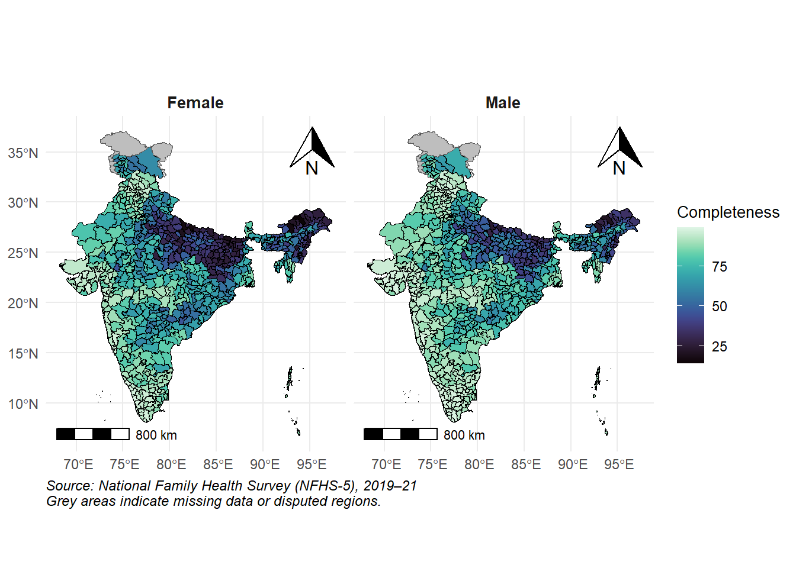
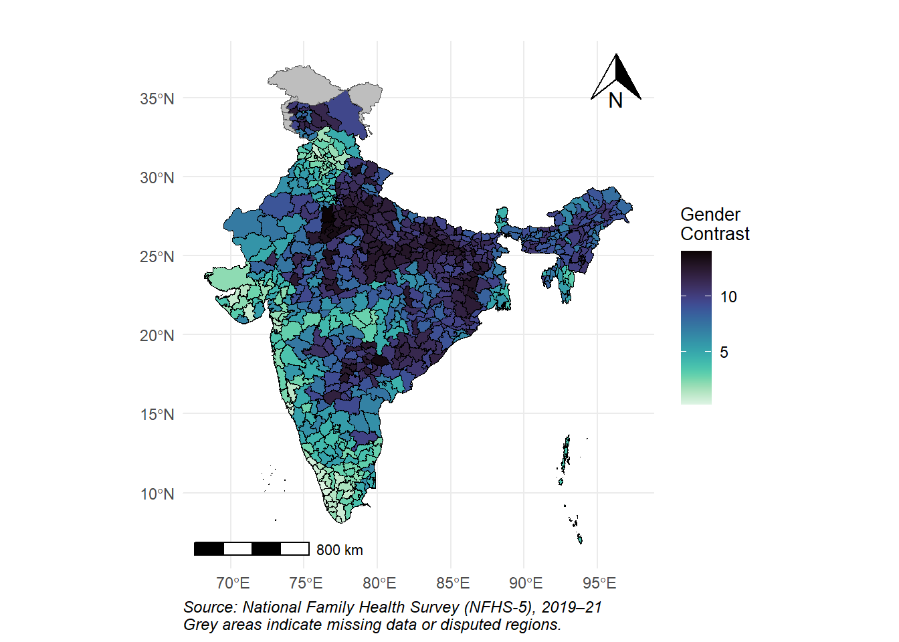
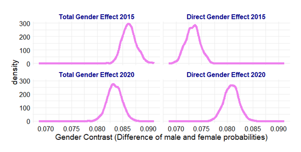

📈 Trends in Death Registration Completeness in India (2014–2021)
India has made strong progress in registering deaths over the last decade — but the gender gap has widened.
- Overall completeness rose from 70% in 2014 to 89.3% in 2021.
- Male deaths were more likely to be registered:
- From 73.4% (2014) to 96% (2021)
- Female registration also improved:
- From 63.3% to 82.5%
- However, the gender gap widened:
- From 10.1% to 13.5% over this period
Figure 1. Death Registration Completeness in India by Sex (2014–2021)
🗺️ State-Level Trends
Some states made significant progress, while others saw setbacks.
✅ States with Biggest Improvements
- Bihar: Up 2.4× to 57.5%
- Uttar Pradesh: Up 1.8× to 76%
- Madhya Pradesh: Achieved 94.8%, a 1.7× increase
⚠️ States with Declining Completeness
- Jharkhand: Fell from 64.8% → 52.3%
- Himachal Pradesh: From 85.5% → 80.2%
- Kerala: Dropped from full coverage to 95%
- Punjab: Fell from 100% → 88.1%
📊 Overall Improvement
- In 2014, only 4 of 21 large states had >90% completeness.
- By 2020, that number increased to 11 states.
Figure 2. Completeness of Death Registration by State and Sex (2014–2021)
🧭 Gender Gaps in Death Registration at the District Level (2021)
How wide is the gap in registering male and female deaths across India? NFHS-5 data show a consistent disadvantage for women, even after adjusting for household and socioeconomic characteristics.
📊 National Gender Gap
- In 2021, India recorded a gender gap of 7.9 percentage points
(95% Credible Interval: 7.4 – 8.3)
- Female deaths were significantly less likely to be registered than male deaths.
- The model adjusted for:
- Education
- Religion
- Wealth
- Caste
- Household and asset ownership
📍 State-Level Highlights
Large gender gaps (>10 percentage points) were observed in:
- Uttar Pradesh: 11.6 (CI: 10.9–12.2)
- Bihar: 11.1 (CI: 10.4–11.8)
- Jharkhand: 11.3 (CI: 10.6–12.0)
- Telangana: 10.5 (CI: 9.3–11.7)
States with near gender parity:
- Kerala: 1.0 (CI: 0.7–1.4)
- Goa: 0.7 (CI: 0.2–1.5)
🗺️ Regional Patterns
🟩 Western India
- 96% of districts: Male completeness >80%
- 86.5%: Female completeness >80%
- 71.6%: Gender gap ≤5%
🟦 Southern India
- 78.1%: Males >80%
- 65.6%: Females >80%
- 17.2%: Gender gap between 10–15%
🟨 Northern India
- 73.5%: Males >80%
- 49.3%: Females >80%
- 22.8%: Gender gap >10–15%
🟥 Central, Eastern & Northeast
- Central: 23.6% males vs. 6.8% females >80%
- Northeast: 17.3% males vs. 8.7% females >80%
- Eastern: 21.7% males vs. 9.5% females >80%
- Many districts show gaps between 10–15 percentage points
🧩 District-Level Inequalities
- 241 districts had gender gaps of 10–15 percentage points
- Northern states dominate this list
🔸 Examples
- Rajasthan: Alwar (14.1), Dausa (13.8), Karauli (13.5)
- Uttarakhand: Tehri Garhwal (13.1)
- Haryana: Mewat (12.1)
- Uttar Pradesh: Ballia (13.3), Aligarh (13.2), Bareilly (13.1) — total 69 high-gap districts
- Bihar: Munger (13.0), Bhojpur (12.8)
- Madhya Pradesh: Chhatarpur (12.7)
- Chhattisgarh: Bilaspur (12.5)
- Jharkhand: Purbi Singhbhum (12.9), Dhanbad (12.7)
- West Bengal: Puruliya (12.9)
- Odisha: Mayurbhanj (12.3)
- Telangana: Jayashankar (13.6), Karimnagar (12.7), Medak (12.6)
Other notable districts include Srikakulam and Visakhapatnam (Andhra Pradesh) and Raichur (Karnataka).
Figure 3. Completeness of Death Registration in India by Gender at the District Level (NFHS-5)

Figure 4. Gender Gap in Completeness of Death Registration in India at the District Level (NFHS-5)

🧮 Total and Direct Effects of Gender on Death Registration (2015 & 2020)
This analysis uses state-level data from NFHS-4 (2015–16) and NFHS-5 (2019–21) to estimate the total and direct effects of gender on the completeness of death registration in 2015 and 2020.
Since NFHS-4 did not include data on death registration, we used completeness estimates at the level of larger states, derived from Civil Registration and SRS data (see Objective 1).
📊 Key Findings
- In 2015, men were 8.62 percentage points more likely to have their deaths registered than women
(95% Credible Interval: 8.37 – 8.91)
- In 2020, the gap narrowed slightly to 8.34 percentage points
(95% CI: 8.05 – 8.61)
🔄 Mediation by Household Asset Ownership
We examined how much of the gender gap could be explained by household ownership of land or housing (a proxy for female material empowerment).
In 2015:
- 15.0% of the gender gap was mediated through asset ownership
- Direct effect of gender: 7.33 percentage points
(CI: 7.07 – 7.60)
In 2020:
- Only 3.12% of the gap was mediated through ownership
- Direct effect of gender: 8.08 percentage points
(CI: 7.79 – 8.36)
Figure 5. Total and Direct Effects of Gender on Death Registration Completeness (2015 & 2020)
